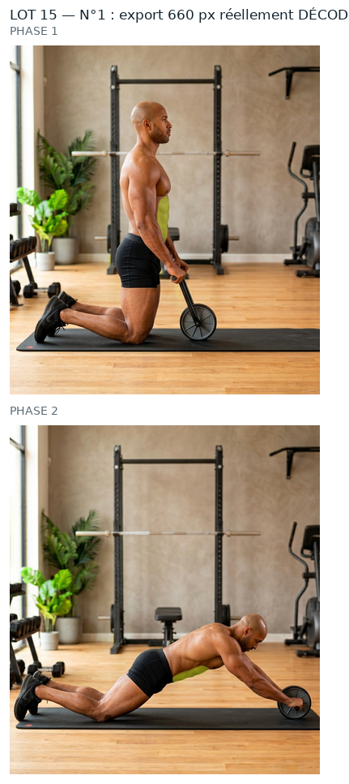
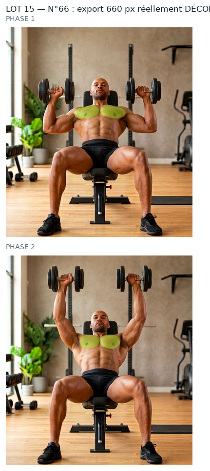
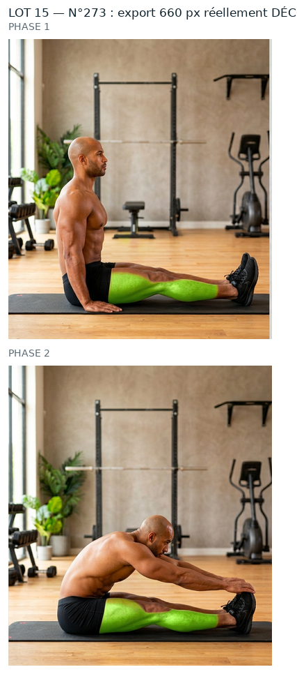
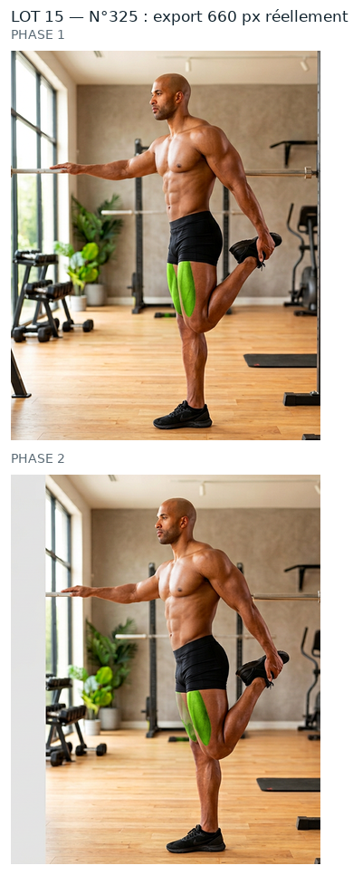

Mêmes règles que le n°44 et les lots précédents que tu as validés : source PNG native, aucun agrandissement, retouche à la résolution de la source, vert ramené dans la famille du n°260, puis WebP animé 660 px (+ GIF de secours). Rien n'est intégré : aucun GIF livré remplacé, APK intact, 0 image générée.
REPRIS le 02/10/2026 : le vert couvre aussi la peau que le GIF livre peignait. Manque sur peau 23 % -> 0 %, couverture 0,57-0,62 -> 0,83-0,84, debordement 0,26 -> 0,20. La zone traitee passe de 8 895 a 11 250 px : elle contient desormais de la peau, ce qui explique une saturation moyenne « avant » plus basse (0,736).
phase 1 plus terne que la référence (0.821 contre 0.914) : l'ombrage entre les phases est conservé — dis-moi si tu veux la remonter
teinte de la source à 79.4°, éloignée des 86,3° du n°260 — la couleur de départ est différente
Zone la plus vaste de la serie (27 410 px). Debordement quasi nul (0,02). Contours 18,9/18,2 px : les plus flous de la serie, fondu accepte le 02/10/2026.
contour large : 18.2 px de transition sur la phase 1 (3 à 6 px sur les numéros les plus nets) — le bord du vert y est plus doux
contour large : 9.55 px de transition sur la phase 2 (3 à 6 px sur les numéros les plus nets) — le bord du vert y est plus doux
zone verte étendue (14404 px) : à vérifier qu'elle ne déborde pas sur le décor
teinte de la source à 76.4°, éloignée des 86,3° du n°260 — la couleur de départ est différente
Ces planches montrent ce que contient réellement le WebP et le GIF de repli (fichiers rouverts image par image), pas le PNG de travail.

n°1 — WebP + GIF décodés

n°66 — WebP + GIF décodés

n°273 — WebP + GIF décodés

n°325 — WebP + GIF décodés
Ce qui reste écarté
n°1, 9, 10 : vert = feuillage du décor (décision du 01/10/2026).
n°218, 235, 239 : planche annoncée ≠ GIF livré (47 à 80/255) — chantier à part.
34 numéros « femme » sans source native (210, 224-259, 274-276, 289-330) : aucune source, donc hors de cette méthode.
Limites (inchangées)
Le GIF reste limité à 256 couleurs par image : c'est le WebP qui porte la qualité.
Au-delà de 660 px d'export on n'ajoute aucun détail, seulement du poids.
Les ROI sont dérivées de la tache verte mesurée dans le GIF livré, pas posées à l'œil (pas de vision dans cette session) : à confirmer visuellement.
Dis-moi, numéro par numéro : « 1 OK » · « 66 OK » · « 273 OK » · « 325 OK » — ou ce qui cloche (teinte, contour, zone mal placée…). Rien ne sera intégré et aucun GIF livré ne sera remplacé avant ton accord.
Contrôles chiffrés
ROI, seuils, percentiles, poids, PSNR et garantie « aucun pixel modifié hors zone » : evolution/media/refonte-photo/hd-2026-09-30/lot15/CONTROLES.json